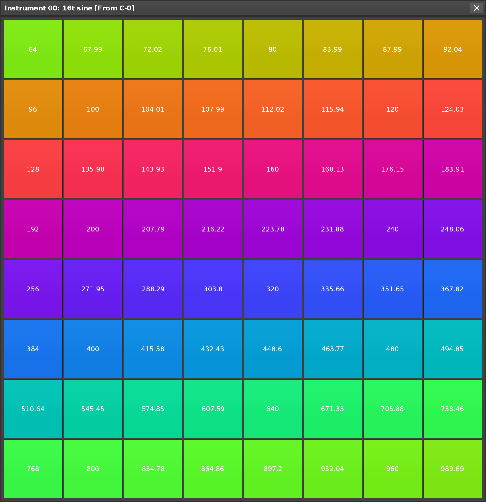
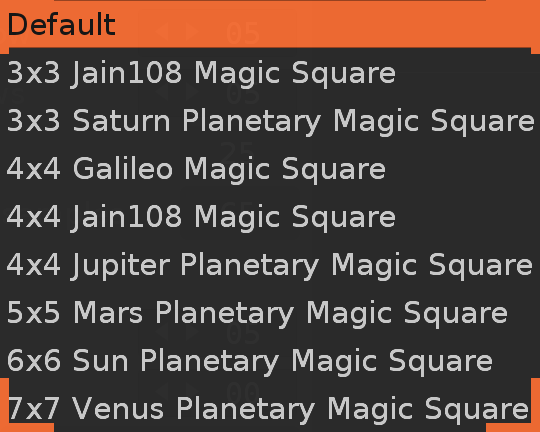
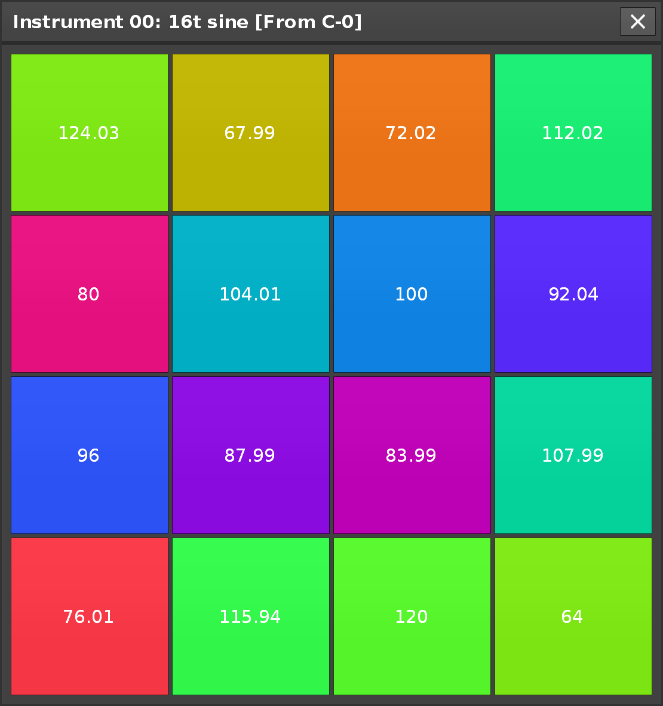
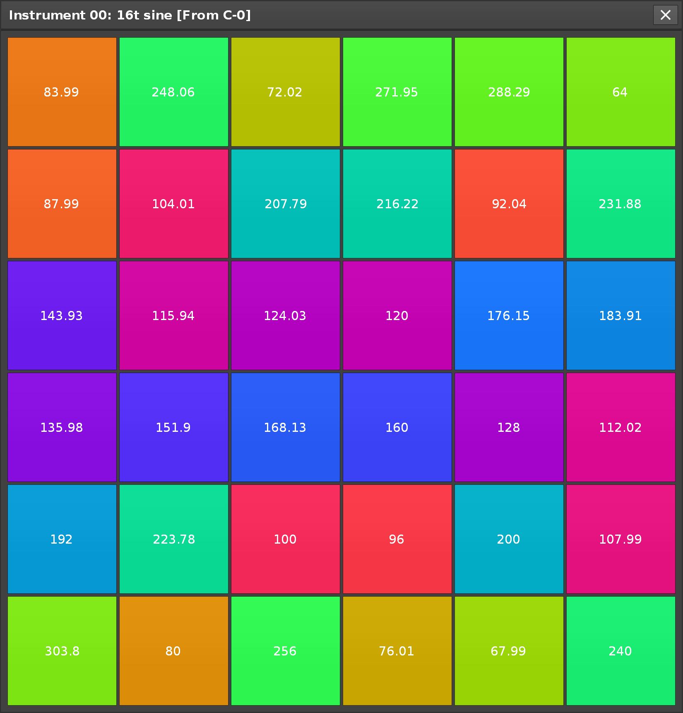
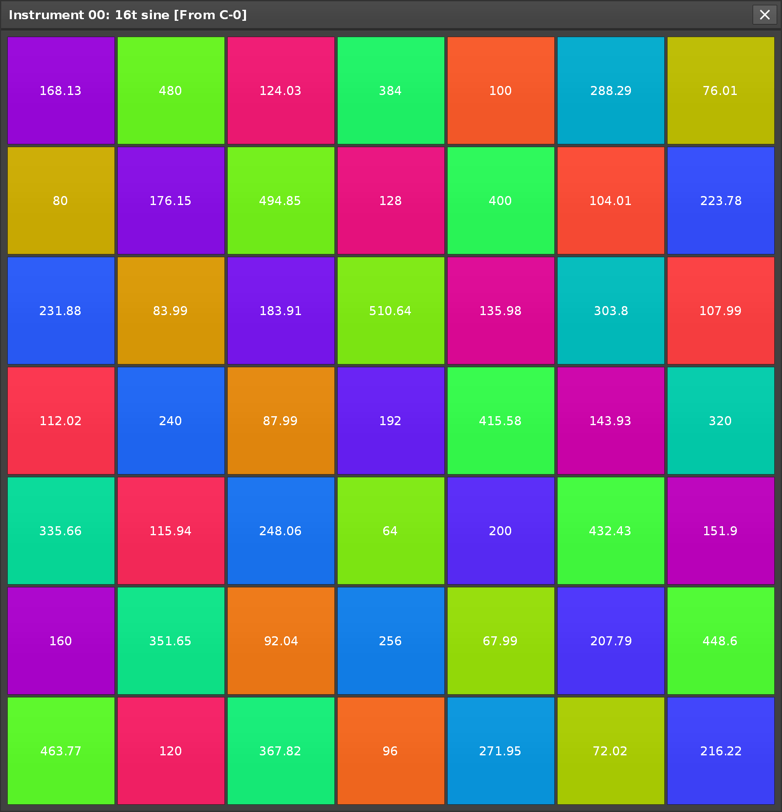
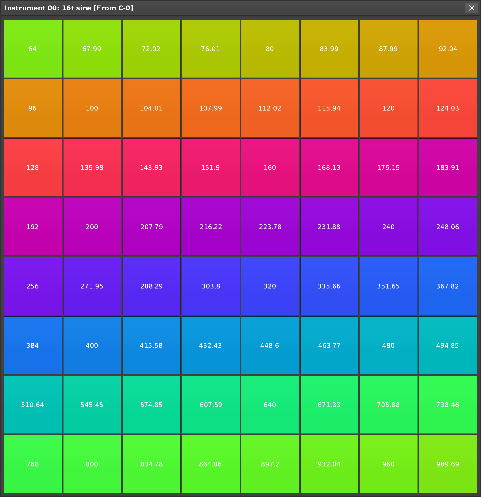
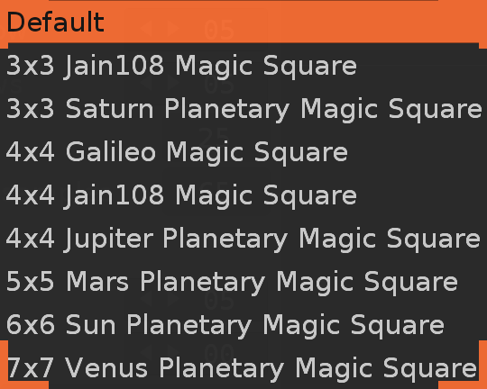
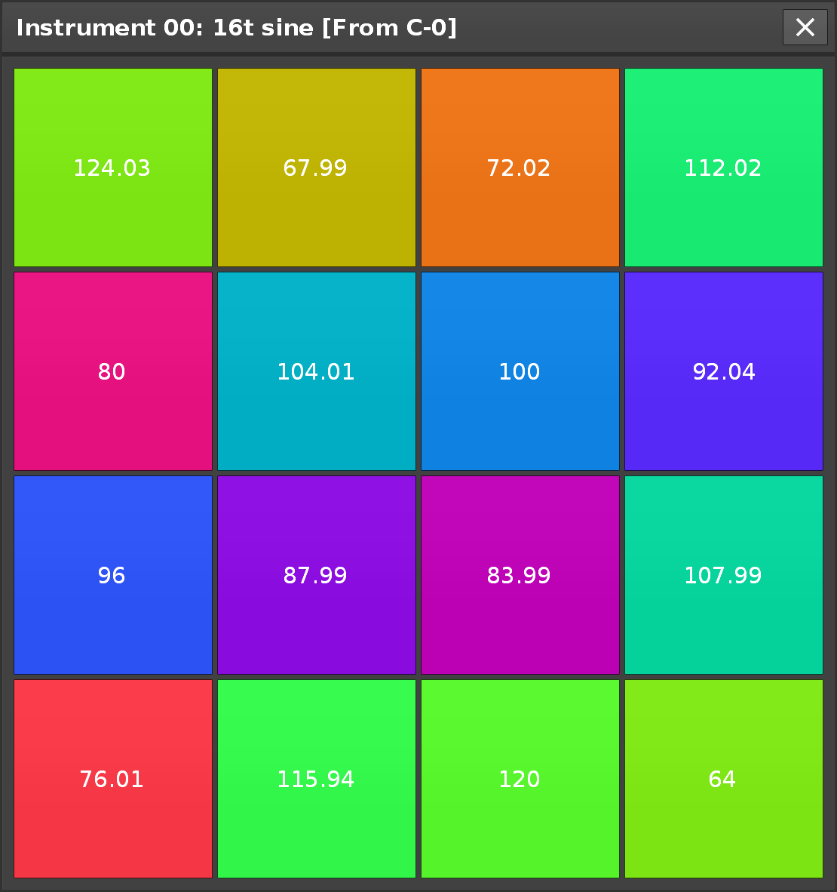
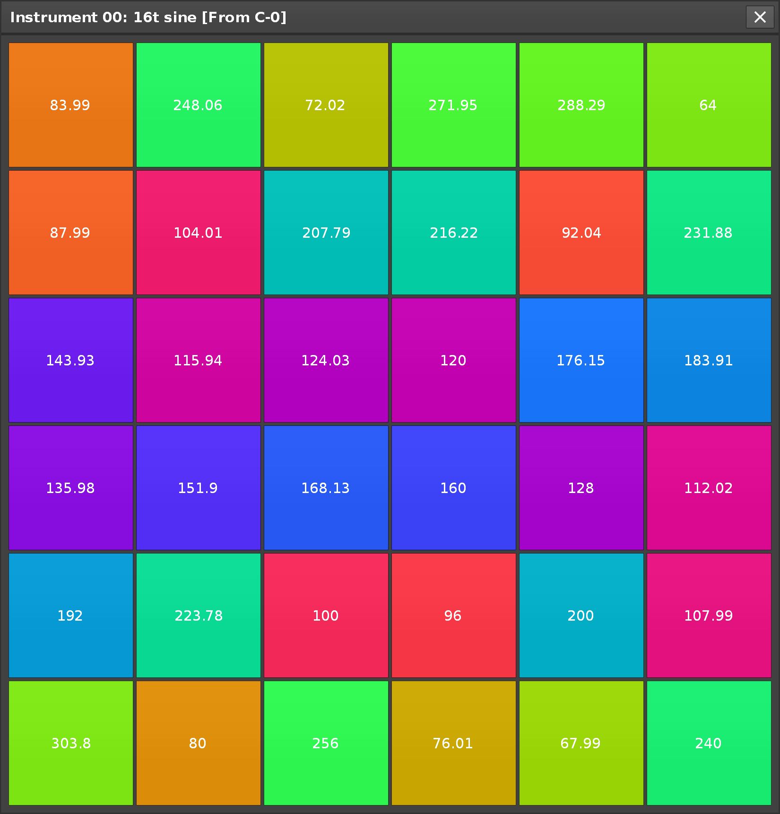
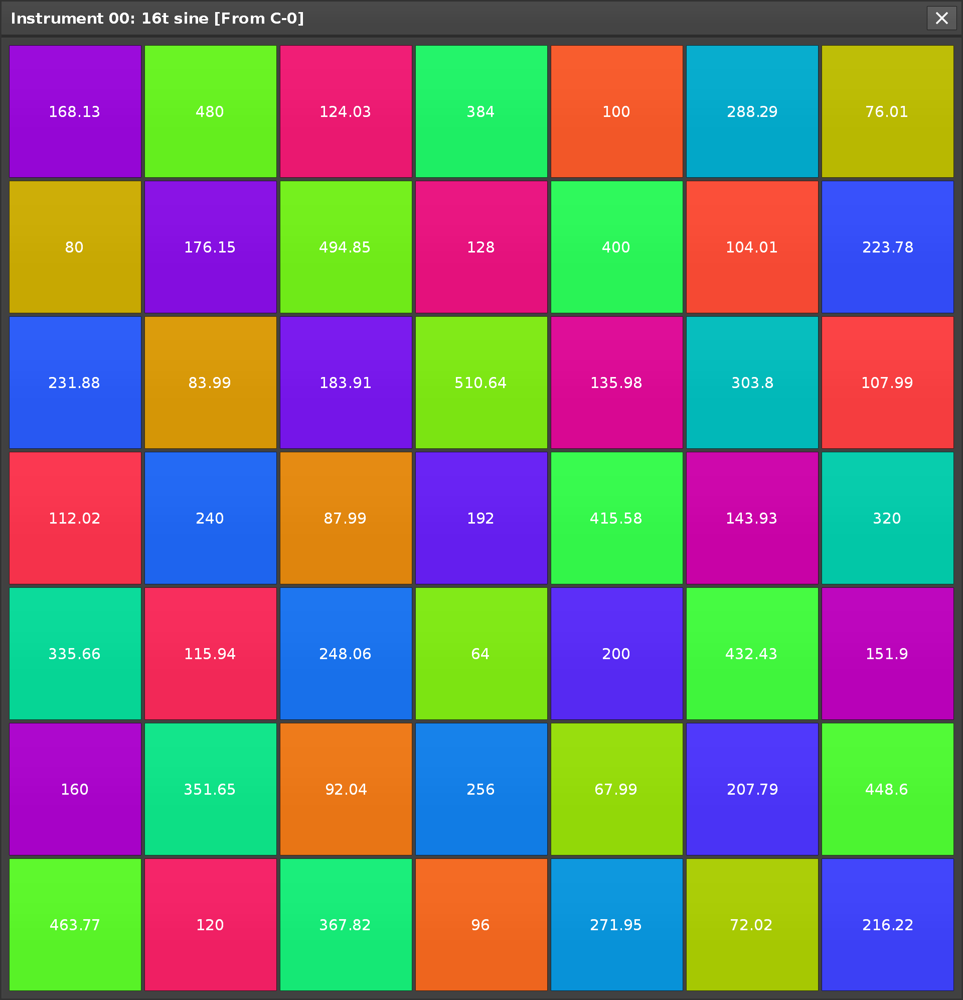

An interactive map of Normanby Park that details notable trees, for
Android, iOS and Web. Using your devices GPS, the app displays your current location on the map so you can use
it while walking around the park. Knowledgeable arboriculturist and horticulturist
Brad Canfield
, Normanby Park staff member, has produced informative content regards a selection of notable tree's.
Still in development, the link directs to an in browser version for authorized users. This is a third
party app created in collaboration with park staff and is not currently supported by, or represent Normanby
Hall Country Park or North Lincolnshire Council.
Acknowledgement and thanks to Ben Buckley for his support and contribution to the apps content.
A weird additive synthesizer that allows you to define the frequencies of all 128 MIDI notes and define
harmonic ratios with precision as decimals or fractions. A work in progress, written with
Cmajor.
Features per harmonic amplitude modulation, playable tables to visualize note mappings, customizable
value bank and explorer inspired by the Colundi value hunter allows you to build custom tunings, harmonics
table shows frequency of each harmonic in every note. On screen grid note controller, optional commands to
program sounds.
Gallery video player is an Android app designed to be used in public spaces, it restricts access to the device
so the audience are able to play and pause the video only and not navigate away. An optional title screen
image can be set, features an auto reset option that rests to the title screen or first frame of the video if
paused for a specified amount of time.
The app was made for the North Lincolnshire Council Museum team and used in the "Stubbs In The Stables"
display at Normanby Hall Country Park, part of "George Stubbs and the
Anatomy of the Horse, celebrating the 300th birthday of anatomist and painter
George Stubbs. The app was used to host video for
Gillian Higgins from
Horses Inside Out and her making of the life size model on
display.
Adds support in Renoise for Sample Modulation Device presets. As Renoise
only supports saving modulation devices in entire Modulation Sets .xrmo files, this tool extends functionality
for users to save and load presets for individual devices, device chains or complete filter sections in new
file types .xrmd, .xrmc or .xrmf, integrated to work consistently with native Renoise presets.
An on screen button controller for Renoise, ideally used with a touchscreen but can be used universally.
Optional note layouts inspired by ancient mathematical
magic squares, including more recent discoveries by
the brilliant Jain108.
A Renoise tool that allows you to create or modify scales and tunings, supports import and export for Scala
.scl files. Resulting scale is given as interval (decimal), ratio (fraction), cents, distance and frequency.
You can view a full MIDI note frequency dump for a scale and given base frequency. Development stopped when I
discovered Sevish's
Scale Workshop, far superior software for
producing scales!
Builds instruments by generating single cycle waveforms, user defines custom note frequencies for each sample
and can generate and layer harmonics defined as decimal or fraction ratio. Supports importing Scala .scl files
to insert octaves of frequencies with base note settings. It can auto generate phrases with pattern options,
generate random set of frequencies from your pre set value bank. Settings for default sample options,
automatically insert modulation devices.
A calculator for nine types of frequency related calculations. Results can be used can be used to
automatically set Renoise sample options and device parameters.
Some music I've made has been shared here, many tracks
have been made private or removed, if you're looking for a track that was previously available you can
contact me.
Here's another page I created to upload old music
from when I first started doing electronic music.
"Dopodomani is released in the spirit of friendship, generosity, and charity. The charity that we
selected was Hunger Relief International, because feeding the poor around the world is so important.
www.hungerreliefinternational.org"
"We present to you 31 tracks from 31 different artists all over the world. All proceeds from this album
will be donated to the WHO COVID-19 Response fund."
"The steelworks you are about to see takes from the
earth five million tons of stone a year, and makes from it one million four hundred thousand tons of steel"
An ambient track I produced appears on
Time Before The Moon, an
E.L.M.C. compilation, mastered by Jake Fields (Dr. Doctor) artwork produced by Nicolas Silesi.
I contributed music to
Colundi Every0ne (An Enchantment Of Sonic Spells), compiled by Grant Wilson-Claridge. Made up of tracks based on Colundi values, "128 resonant frequencies
chosen via experimentation and philosophy, each relating to a specific human bio-resonance, or psychology,
traditional mysticism or belief, physics, astronomy, maths, chemistry”.
Ultradian7 is an independent creator with roots in music. The name
Ultradian refers to an ultradian rhythm which "is
a recurrent period or cycle repeated throughout a 24-hour day." Besides holding personal significance, the
number 7 is the number of days in a week or cycles of a "circadian" rhythm within which ultradian cycles
recur, is often associated with luck, completeness and creativity, connected to
the seven wonders of the
ancient world, the 7 colours of the rainbow as divided by
Isaac Newton. The
magic number 7 holds
reference to the human brain tending to remember about 7 items in short-term memory.


 








